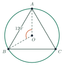
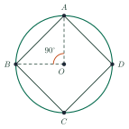
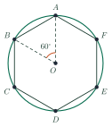
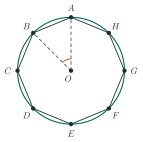
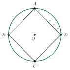
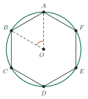
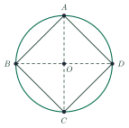
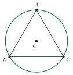
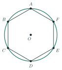

Regular PolygonsĐa giác đều
Grade 9 · Topic: Circumcircle and IncircleLớp 9 · Chủ đề: Đường tròn ngoại tiếp và đường tròn nội tiếp
1Lesson IntroductionGiới thiệu bài học
Learning goalsMục tiêu bài học
By the end of this lesson you can:
Sau bài học này, em có thể:
recognize regular polygons and real objects shaped like them;
nhận biết được đa giác đều và các hình dạng đa giác đều trong thực tế;
understand rotations and find the rotations that map a regular polygon onto itself;
hiểu phép quay và xác định được các phép quay giữ nguyên đa giác đều;
compute the central angle \(\dfrac{360^\circ}{n}\) and the interior angle;
tính được góc ở tâm \(\dfrac{360^\circ}{n}\) và góc trong của đa giác đều;
compute sides, perimeters and areas of inscribed regular polygons (hexagon, square, triangle).
tính được cạnh, chu vi, diện tích của đa giác đều nội tiếp (lục giác đều, hình vuông, tam giác đều).
2Mathematical VocabularyTừ vựng Toán học
regular polygon – a convex polygon with all sides equal and all angles equal.
Đa giác đều – đa giác lồi có tất cả các cạnh bằng nhau và tất cả các góc bằng nhau.
center of a regular polygon – the common center of its circumcircle and incircle.
Tâm của đa giác đều – tâm chung của đường tròn ngoại tiếp và đường tròn nội tiếp đa giác.
rotation – turning every point about a fixed point \(O\) through the same angle in the same direction.
Phép quay – biến mỗi điểm quay quanh một điểm cố định \(O\) một góc như nhau, theo cùng một chiều.
center / angle of rotation – the fixed point \(O\) / the angle \(\alpha\).
Tâm quay / góc quay – điểm cố định \(O\) / góc \(\alpha\).
map … onto itself – after the rotation the figure covers its old position.
Biến hình … thành chính nó – sau phép quay, hình trùng với vị trí cũ.
3Useful English PhrasesCụm từ tiếng Anh thường gặp
\(ABCDEF\) is a regular hexagon with center \(O\).
\(ABCDEF\) là lục giác đều tâm \(O\).
The rotation about \(O\) through \(60^\circ\) maps \(A\) onto \(B\).
Phép quay tâm \(O\) góc \(60^\circ\) biến \(A\) thành \(B\).
The rotation maps the hexagon onto itself.
Phép quay biến lục giác thành chính nó.
Each interior angle measures \(120^\circ\).
Mỗi góc trong có số đo \(120^\circ\).
Find the perimeter of the inscribed regular hexagon.
Tính chu vi lục giác đều nội tiếp.
4Prerequisite ReviewÔn tập kiến thức nền
Lesson 28. An equilateral triangle has a circumcircle and an incircle with the same center.
Bài 28. Tam giác đều có đường tròn ngoại tiếp và nội tiếp cùng tâm.
Grade 8. The interior angles of an \(n\)-gon add up to \((n-2)\cdot180^\circ\).
Lớp 8. Tổng các góc trong của đa giác \(n\) cạnh bằng \((n-2)\cdot180^\circ\).
5TheoryLý thuyết
5.1 Regular polygonsĐa giác đều
DefinitionĐịnh nghĩa
A regular polygon is a convex polygon whose sides are all equal and whose angles are all equal. Examples: equilateral triangle, square, regular pentagon, regular hexagon.
Đa giác đều là đa giác lồi có tất cả các cạnh bằng nhau và tất cả các góc bằng nhau. Ví dụ: tam giác đều, hình vuông, ngũ giác đều, lục giác đều.
Every regular polygon has a circumcircle and an incircle with the same center \(O\) (the center of the polygon).
Mỗi đa giác đều có một đường tròn ngoại tiếp và một đường tròn nội tiếp cùng tâm \(O\) (gọi là tâm của đa giác đều).
Angles of a regular \(n\)-gonCác góc của đa giác đều \(n\) cạnh
Central angle (subtended by one side): \(\dfrac{360^\circ}{n}\).
Góc ở tâm (chắn một cạnh): \(\dfrac{360^\circ}{n}\).
Interior angle: \(\dfrac{(n-2)\cdot180^\circ}{n}\). Example: regular hexagon \(\dfrac{4\cdot180^\circ}{6}=120^\circ\).
Góc trong: \(\dfrac{(n-2)\cdot180^\circ}{n}\). Ví dụ: lục giác đều \(\dfrac{4\cdot180^\circ}{6}=120^\circ\).



Real objects: honeycomb cells (hexagons), floor tiles, the pentagon on a football, the octagonal STOP sign.
Trong thực tế: ô tổ ong (lục giác đều), gạch lát nền, các ngũ giác trên quả bóng đá, biển báo STOP hình bát giác.
5.2 RotationsPhép quay
DefinitionĐịnh nghĩa
The rotation about \(O\) through \(\alpha^\circ\) (\(0^\circ\lt\alpha^\circ\lt360^\circ\)) moves each point \(A\ne O\) to the point \(A^{\prime}) on the circle \((O;\,OA)\) such that the arc from \(A\) to \(A^{\prime}\) measures \(\alpha^\circ\) in the given direction (clockwise or counterclockwise). \(O\) stays fixed.
Phép quay tâm \(O\), góc \(\alpha^\circ\) (\(0^\circ\lt\alpha^\circ\lt360^\circ\)) biến mỗi điểm \(A\ne O\) thành điểm \(A^{\prime}\) thuộc đường tròn \((O;\,OA)\) sao cho cung từ \(A\) đến \(A^{\prime}\) theo chiều quay có số đo \(\alpha^\circ\); điểm \(O\) giữ nguyên.
The rotation through \(360^\circ\) keeps every point in place.
Phép quay \(360^\circ\) giữ nguyên mọi điểm.
Rotations keeping a regular polygonPhép quay giữ nguyên đa giác đều
The rotations about the center \(O\) through \(\dfrac{360^\circ}{n},\ 2\cdot\dfrac{360^\circ}{n},\ \dots,\ n\cdot\dfrac{360^\circ}{n}=360^\circ\) map a regular \(n\)-gon onto itself (in either direction). Example: the equilateral triangle – \(120^\circ, 240^\circ, 360^\circ\); the square – \(90^\circ, 180^\circ, 270^\circ, 360^\circ\).
Các phép quay tâm \(O\) góc \(\dfrac{360^\circ}{n},\ 2\cdot\dfrac{360^\circ}{n},\ \dots,\ n\cdot\dfrac{360^\circ}{n}=360^\circ\) (theo chiều nào cũng được) biến đa giác đều \(n\) cạnh thành chính nó. Ví dụ: tam giác đều – \(120^\circ, 240^\circ, 360^\circ\); hình vuông – \(90^\circ, 180^\circ, 270^\circ, 360^\circ\).
6Worked ExamplesVí dụ có lời giải
ExampleVí dụ 1RememberingNhận biết – Regular or not?Có phải đa giác đều?
Which are regular polygons?
(a) a rhombus with a \(60^\circ\) angle;
(b) a square;
(c) a rectangle 2 cm × 3 cm;
(d) a hexagonal honeycomb cell with equal sides and \(120^\circ\) angles.
Hình nào là đa giác đều?
a) hình thoi có một góc \(60^\circ\);
b) hình vuông;
c) hình chữ nhật 2 cm × 3 cm;
d) ô tổ ong hình lục giác có các cạnh bằng nhau và các góc bằng \(120^\circ\).
Analysis: Both conditions: equal sides AND equal angles.
Phân tích: Cần cả hai điều kiện: các cạnh bằng nhau VÀ các góc bằng nhau.
(a) No (angles \(60^\circ\), \(120^\circ\)).
(b) Yes.
(c) No (sides 2 and 3).
(d) Yes.a) Không (các góc \(60^\circ\), \(120^\circ\)). b) Có. c) Không (các cạnh 2 và 3). d) Có.
(b) and (d).
b) và d).
ExampleVí dụ 2UnderstandingThông hiểu – Angles of a regular octagonCác góc của bát giác đều
Find the central angle and each interior angle of a regular octagon.
Tính góc ở tâm và mỗi góc trong của bát giác đều.
Analysis: \(n=8\).
Phân tích: \(n=8\).
Central angle \(\dfrac{360^\circ}{8}=45^\circ\).
Góc ở tâm \(\dfrac{360^\circ}{8}=45^\circ\).
Interior angle \(\dfrac{6\cdot180^\circ}{8}=135^\circ\).
Góc trong \(\dfrac{6\cdot180^\circ}{8}=135^\circ\).
\(45^\circ\); \(135^\circ\).
\(45^\circ\); \(135^\circ\).
ExampleVí dụ 3Basic applicationVận dụng thấp – Rotations of a hexagonPhép quay giữ nguyên lục giác đều
\(ABCDEF\) is a regular hexagon with center \(O\).
(a) List the rotations about \(O\) (counterclockwise, \(0^\circ\lt\alpha\le360^\circ\)) that map it onto itself.
(b) The rotation through \(120^\circ\) maps \(A\) onto which vertex?
\(ABCDEF\) là lục giác đều tâm \(O\).
a) Liệt kê các phép quay tâm \(O\) (ngược chiều kim đồng hồ, \(0^\circ\lt\alpha\le360^\circ\)) biến lục giác thành chính nó.
b) Phép quay góc \(120^\circ\) biến \(A\) thành đỉnh nào?
Analysis: Multiples of \(60^\circ\); each \(60^\circ\) moves a vertex to the next one.
Phân tích: Các bội của \(60^\circ\); mỗi lần quay \(60^\circ\) đưa một đỉnh tới đỉnh kế tiếp.
Regular hexagon: central angle \(60^\circ\); \(OAB\) is equilateral.Lục giác đều: góc ở tâm \(60^\circ\); tam giác \(OAB\) đều. (a) \(60^\circ, 120^\circ, 180^\circ, 240^\circ, 300^\circ, 360^\circ\) (6 rotations).
(b) \(120^\circ=2\cdot60^\circ\): \(A\to C\) (vertices named counterclockwise).a) \(60^\circ, 120^\circ, 180^\circ, 240^\circ, 300^\circ, 360^\circ\) (6 phép quay). b) \(120^\circ=2\cdot60^\circ\): \(A\) biến thành \(C\) (các đỉnh đặt tên ngược chiều kim đồng hồ).
(a) 6 rotations;
(b) \(C\).
a) 6 phép quay;
b) \(C\).
ExampleVí dụ 4Basic applicationVận dụng thấp – Inscribed regular polygonsĐa giác đều nội tiếp
A circle has radius 4 cm. Find the side of the inscribed regular hexagon, of the inscribed square and of the inscribed equilateral triangle.
Đường tròn có bán kính 4 cm. Tính cạnh của lục giác đều, hình vuông và tam giác đều nội tiếp đường tròn đó.
Analysis: Hexagon: \(a=R\); square: \(a=R\sqrt2\); triangle: \(a=R\sqrt3\).
Phân tích: Lục giác đều: \(a=R\); hình vuông: \(a=R\sqrt2\); tam giác đều: \(a=R\sqrt3\).
Hexagon: \(OAB\) is equilateral, \(a=4\) cm. Square: diagonal \(8\), \(a=4\sqrt2\) cm. Triangle: \(a=4\sqrt3\) cm.
Lục giác: tam giác \(OAB\) đều, \(a=4\) cm. Hình vuông: đường chéo \(8\), \(a=4\sqrt2\) cm. Tam giác đều: \(a=4\sqrt3\) cm.
4 cm; \(4\sqrt2\) cm; \(4\sqrt3\) cm.
4 cm; \(4\sqrt2\) cm; \(4\sqrt3\) cm.
ExampleVí dụ 5ApplicationVận dụng – A hexagonal tileViên gạch lục giác
A floor tile is a regular hexagon with side 4 cm.
(a) Find its perimeter and area.
(b) Explain why regular hexagons can cover a floor without gaps.
Một viên gạch lát nền là lục giác đều cạnh 4 cm.
a) Tính chu vi và diện tích viên gạch.
b) Giải thích vì sao các viên gạch lục giác đều lát kín được mặt sàn.
Analysis: Split the hexagon into 6 equilateral triangles.
Phân tích: Chia lục giác thành 6 tam giác đều.
(a) Perimeter \(6\cdot4=24\) cm; area \(6\cdot\dfrac{4^2\sqrt3}{4}=24\sqrt3\approx41.6\) cm².
a) Chu vi \(6\cdot4=24\) cm; diện tích \(6\cdot\dfrac{4^2\sqrt3}{4}=24\sqrt3\approx41{,}6\) cm².
(b) Each interior angle is \(120^\circ\) and \(3\cdot120^\circ=360^\circ\): three tiles fit exactly around each vertex.
b) Mỗi góc trong bằng \(120^\circ\) và \(3\cdot120^\circ=360^\circ\): ba viên gạch khít nhau quanh mỗi đỉnh.
(a) 24 cm; \(24\sqrt3\) cm²;
(b) \(3\cdot120^\circ=360^\circ\).
a) 24 cm; \(24\sqrt3\) cm²;
b) \(3\cdot120^\circ=360^\circ\).
7PracticeBài tập luyện tập
A. Multiple ChoiceA. Trắc nghiệm nhiều lựa chọn
What is the central angle of a regular octagon (the angle subtended at the center by one side)?

Góc ở tâm của bát giác đều (góc ở tâm chắn một cạnh) bằng bao nhiêu?
Answer: c. \(\dfrac{360^\circ}{8}=45^\circ\).
Đáp án c. \(\dfrac{360^\circ}{8}=45^\circ\).
Find each interior angle of a regular hexagon.
Tính số đo mỗi góc trong của lục giác đều.
Answer: a. Sum of interior angles \((6-2)\cdot180^\circ=720^\circ\); each angle \(\dfrac{720^\circ}{6}=120^\circ\).
Đáp án a. Tổng các góc trong \((6-2)\cdot180^\circ=720^\circ\); mỗi góc \(\dfrac{720^\circ}{6}=120^\circ\).
Which figure is NOT a regular polygon?
Hình nào sau đây KHÔNG phải là đa giác đều?
Answer: a. A regular polygon has all sides equal and all angles equal.
Đáp án a. Đa giác đều là đa giác có tất cả các cạnh bằng nhau và tất cả các góc bằng nhau.
B. True or FalseB. Đúng hoặc sai
The rotation about the center \(O\) through \(20^\circ\) maps the square onto itself.
Phép quay tâm \(O\) góc \(20^\circ\) biến hình vuông thành chính nó.
False. It works exactly for multiples of \(\dfrac{360^\circ}{4}=90^\circ\). 20 is not a multiple of 90.
Sai. Chỉ đúng khi góc quay là bội của \(\dfrac{360^\circ}{4}=90^\circ\). 20 không là bội của 90.
A regular hexagon is inscribed in a circle of radius 18 cm. Each side of the hexagon is \(18\) cm long.
Một lục giác đều nội tiếp đường tròn bán kính 18 cm. Mỗi cạnh của lục giác dài \(18\) cm.
True. The central angle is \(60^\circ\), so each triangle \(OAB\) is equilateral: side \(=R=18\) cm.
Đúng. Góc ở tâm bằng \(60^\circ\) nên mỗi tam giác \(OAB\) đều: cạnh \(=R=18\) cm.
C. Short AnswerC. Trả lời ngắn
How many rotations about its center with angle \(\alpha\), \(0^\circ\lt\alpha\le360^\circ\), map a regular 12-gon onto itself?
Có bao nhiêu phép quay tâm \(O\) góc \(\alpha\) (\(0^\circ\lt\alpha\le360^\circ\)) biến đa giác đều 12 cạnh tâm \(O\) thành chính nó?
Enter a number.
Nhập một số.
Answer: 12. The angles \(30^\circ, 60^\circ, \dots, 360^\circ\): 12 rotations.
Đáp số: 12. Các góc \(30^\circ, 60^\circ, \dots, 360^\circ\): có 12 phép quay.
The central angle of a regular polygon is \(45^\circ\). How many sides does it have?
Góc ở tâm của một đa giác đều bằng \(45^\circ\). Đa giác đó có bao nhiêu cạnh?
Enter a number.
Nhập một số.
Answer: 8. \(n=\dfrac{360}{45}=8\).
Đáp số: 8. \(n=\dfrac{360}{45}=8\).
D1. Self-practice – RememberingD1. Tự luyện – Mức Nhận biết
Why is a rhombus with a \(70^\circ\) angle NOT a regular polygon?
Vì sao hình thoi có một góc \(70^\circ\) KHÔNG phải là đa giác đều?
Answer: b. Its angles are \(70^\circ\) and \(110^\circ\).
Đáp án b. Các góc của nó là \(70^\circ\) và \(110^\circ\).
The rotations that map the square \(ABCD\) onto itself have their center at…

Các phép quay biến hình vuông \(ABCD\) thành chính nó có tâm quay là…
Answer: c. The center of the circumcircle (center of the polygon).
Đáp án c. Tâm của đường tròn ngoại tiếp (tâm của đa giác).
What is the smallest positive angle of a rotation about the center that maps a regular 12-gon onto itself?
Góc quay dương nhỏ nhất của phép quay quanh tâm biến đa giác đều 12 cạnh thành chính nó là bao nhiêu?
Answer: a. \(\dfrac{360^\circ}{12}=30^\circ\).
Đáp án a. \(\dfrac{360^\circ}{12}=30^\circ\).
D2. Self-practice – UnderstandingD2. Tự luyện – Mức Thông hiểu
Which rotation about its center maps a square onto itself?
Phép quay nào quanh tâm biến hình vuông thành chính nó?
Answer: b. Multiples of \(90^\circ\) work: \(180=2\cdot90\).
Đáp án b. Các bội của \(90^\circ\) đều thỏa mãn: \(180=2\cdot90\).
What is the sum of the interior angles of a regular polygon with 10 sides?
Tổng các góc trong của một đa giác đều 10 cạnh bằng bao nhiêu?
Answer: d. \((n-2)\cdot180^\circ=8\cdot180^\circ=1440^\circ\).
Đáp án d. \((n-2)\cdot180^\circ=8\cdot180^\circ=1440^\circ\).
Each interior angle of a regular 15-gon is \(156^\circ\). What is each exterior angle?
Mỗi góc trong của đa giác đều 15 cạnh bằng \(156^\circ\). Mỗi góc ngoài bằng bao nhiêu?
Answer: c. \(180^\circ-156^\circ=24^\circ\) (also \(\dfrac{360^\circ}{15}\)).
Đáp án c. \(180^\circ-156^\circ=24^\circ\) (cũng bằng \(\dfrac{360^\circ}{15}\)).
D3. Self-practice – Basic applicationD3. Tự luyện – Mức Vận dụng thấp
A regular hexagon is inscribed in a circle of radius 15 cm. Find its perimeter.

Một lục giác đều nội tiếp đường tròn bán kính 15 cm. Tính chu vi lục giác.
Answer: b. Side \(=R=15\); perimeter \(6\cdot15=90\) cm.
Đáp án b. Cạnh \(=R=15\); chu vi \(6\cdot15=90\) cm.
A square \(ABCD\) is inscribed in a circle of radius 11 cm. Find its area.

Hình vuông \(ABCD\) nội tiếp đường tròn bán kính 11 cm. Tính diện tích hình vuông.
Answer: c. The diagonals are diameters \(2R\); area \(=\dfrac{(2R)^2}{2}=2R^2=242\) cm².
Đáp án c. Hai đường chéo là đường kính \(2R\); diện tích \(=\dfrac{(2R)^2}{2}=2R^2=242\) cm².
An equilateral triangle is inscribed in a circle of radius 2 cm. Find its side.
Tam giác đều nội tiếp đường tròn bán kính 2 cm. Tính độ dài cạnh tam giác.
Answer: b. Central angle \(120^\circ\): side \(=2R\sin60^\circ=R\sqrt3=2\sqrt3\text{ cm}\).
Đáp án b. Góc ở tâm \(120^\circ\): cạnh \(=2R\sin60^\circ=R\sqrt3=2\sqrt3\text{ cm}\).
D4. Self-practice – Advanced applicationD4. Tự luyện – Mức Vận dụng
A hexagonal floor tile is a regular hexagon with side 2 cm. Find its area.
Một viên gạch lát nền hình lục giác đều cạnh 2 cm. Tính diện tích viên gạch.
Answer: b. Six equilateral triangles of side 2: \(6\cdot\dfrac{2^2\sqrt3}{4}=6\sqrt3\) cm².
Đáp án b. Sáu tam giác đều cạnh 2: \(6\cdot\dfrac{2^2\sqrt3}{4}=6\sqrt3\) cm².
Tiles of one kind of regular polygon must cover a floor without gaps or overlaps (the angles at each vertex add up to \(360^\circ\)). Which shape works?
Lát kín mặt sàn bằng các viên gạch cùng một loại đa giác đều (tổng các góc tại mỗi đỉnh chung bằng \(360^\circ\)). Dùng loại nào được?
Answer: c. Interior angle \(60^\circ\) divides \(360^\circ\).
Đáp án c. Góc trong \(60^\circ\) là ước của \(360^\circ\).
A gear wheel has 24 equally spaced teeth (its outline is symmetric like a regular 24-gon). It turns so that each tooth moves 5 places forward. Through what angle has it turned?
Một bánh răng có 24 răng cách đều nhau (đường viền đối xứng như đa giác đều 24 cạnh). Bánh răng quay sao cho mỗi răng tiến lên 5 vị trí. Bánh răng đã quay một góc bao nhiêu?
Answer: c. One place = \(\dfrac{360^\circ}{24}=15^\circ\); \(5\) places = \(75^\circ\).
Đáp án c. Một vị trí ứng với \(\dfrac{360^\circ}{24}=15^\circ\); \(5\) vị trí ứng với \(75^\circ\).
A. Multiple ChoiceA. Trắc nghiệm nhiều lựa chọn
What is the central angle of a regular hexagon (the angle subtended at the center by one side)?
Góc ở tâm của lục giác đều (góc ở tâm chắn một cạnh) bằng bao nhiêu?
Answer: c. \(\dfrac{360^\circ}{6}=60^\circ\).
Đáp án c. \(\dfrac{360^\circ}{6}=60^\circ\).
Find each interior angle of a regular decagon.
Tính số đo mỗi góc trong của thập giác đều.
Answer: b. Sum of interior angles \((10-2)\cdot180^\circ=1440^\circ\); each angle \(\dfrac{1440^\circ}{10}=144^\circ\).
Đáp án b. Tổng các góc trong \((10-2)\cdot180^\circ=1440^\circ\); mỗi góc \(\dfrac{1440^\circ}{10}=144^\circ\).
Which figure is a regular polygon?
Hình nào sau đây là đa giác đều?
Answer: c. A regular polygon has all sides equal and all angles equal.
Đáp án c. Đa giác đều là đa giác có tất cả các cạnh bằng nhau và tất cả các góc bằng nhau.
B. True or FalseB. Đúng hoặc sai
The rotation about the center \(O\) through \(80^\circ\) maps the regular hexagon onto itself.
Phép quay tâm \(O\) góc \(80^\circ\) biến lục giác đều thành chính nó.
False. It works exactly for multiples of \(\dfrac{360^\circ}{6}=60^\circ\). 80 is not a multiple of 60.
Sai. Chỉ đúng khi góc quay là bội của \(\dfrac{360^\circ}{6}=60^\circ\). 80 không là bội của 60.
A regular hexagon is inscribed in a circle of radius 5 cm. Each side of the hexagon is \(5\) cm long.
Một lục giác đều nội tiếp đường tròn bán kính 5 cm. Mỗi cạnh của lục giác dài \(5\) cm.
True. The central angle is \(60^\circ\), so each triangle \(OAB\) is equilateral: side \(=R=5\) cm.
Đúng. Góc ở tâm bằng \(60^\circ\) nên mỗi tam giác \(OAB\) đều: cạnh \(=R=5\) cm.
C. Short AnswerC. Trả lời ngắn
How many rotations about its center with angle \(\alpha\), \(0^\circ\lt\alpha\le360^\circ\), map a regular decagon onto itself?
Có bao nhiêu phép quay tâm \(O\) góc \(\alpha\) (\(0^\circ\lt\alpha\le360^\circ\)) biến thập giác đều tâm \(O\) thành chính nó?
Enter a number.
Nhập một số.
Answer: 10. The angles \(36^\circ, 72^\circ, \dots, 360^\circ\): 10 rotations.
Đáp số: 10. Các góc \(36^\circ, 72^\circ, \dots, 360^\circ\): có 10 phép quay.
The central angle of a regular polygon is \(30^\circ\). How many sides does it have?
Góc ở tâm của một đa giác đều bằng \(30^\circ\). Đa giác đó có bao nhiêu cạnh?
Enter a number.
Nhập một số.
Answer: 12. \(n=\dfrac{360}{30}=12\).
Đáp số: 12. \(n=\dfrac{360}{30}=12\).
D1. Self-practice – RememberingD1. Tự luyện – Mức Nhận biết
Why is a 4 cm × 6 cm rectangle NOT a regular polygon?
Vì sao hình chữ nhật 4 cm × 6 cm KHÔNG phải là đa giác đều?
Answer: d. All angles are \(90^\circ\), but the sides are 4 cm and 6 cm.
Đáp án d. Các góc đều bằng \(90^\circ\) nhưng các cạnh là 4 cm và 6 cm.
The rotations that map the equilateral triangle \(ABC\) onto itself have their center at…

Các phép quay biến tam giác đều \(ABC\) thành chính nó có tâm quay là…
Answer: c. The center of the circumcircle (center of the polygon).
Đáp án c. Tâm của đường tròn ngoại tiếp (tâm của đa giác).
What is the smallest positive angle of a rotation about the center that maps a regular hexagon onto itself?
Góc quay dương nhỏ nhất của phép quay quanh tâm biến lục giác đều thành chính nó là bao nhiêu?
Answer: d. \(\dfrac{360^\circ}{6}=60^\circ\).
Đáp án d. \(\dfrac{360^\circ}{6}=60^\circ\).
D2. Self-practice – UnderstandingD2. Tự luyện – Mức Thông hiểu
Which rotation about its center maps a equilateral triangle onto itself?
Phép quay nào quanh tâm biến tam giác đều thành chính nó?
Answer: c. Multiples of \(120^\circ\) work: \(120=1\cdot120\).
Đáp án c. Các bội của \(120^\circ\) đều thỏa mãn: \(120=1\cdot120\).
What is the sum of the interior angles of a regular polygon with 5 sides?
Tổng các góc trong của một đa giác đều 5 cạnh bằng bao nhiêu?
Answer: b. \((n-2)\cdot180^\circ=3\cdot180^\circ=540^\circ\).
Đáp án b. \((n-2)\cdot180^\circ=3\cdot180^\circ=540^\circ\).
Each interior angle of a regular 12-gon is \(150^\circ\). What is each exterior angle?
Mỗi góc trong của đa giác đều 12 cạnh bằng \(150^\circ\). Mỗi góc ngoài bằng bao nhiêu?
Answer: b. \(180^\circ-150^\circ=30^\circ\) (also \(\dfrac{360^\circ}{12}\)).
Đáp án b. \(180^\circ-150^\circ=30^\circ\) (cũng bằng \(\dfrac{360^\circ}{12}\)).
D3. Self-practice – Basic applicationD3. Tự luyện – Mức Vận dụng thấp
A regular hexagon is inscribed in a circle of radius 11 cm. Find its perimeter.
Một lục giác đều nội tiếp đường tròn bán kính 11 cm. Tính chu vi lục giác.
Answer: d. Side \(=R=11\); perimeter \(6\cdot11=66\) cm.
Đáp án d. Cạnh \(=R=11\); chu vi \(6\cdot11=66\) cm.
A square \(ABCD\) is inscribed in a circle of radius 15 cm. Find its area.
Hình vuông \(ABCD\) nội tiếp đường tròn bán kính 15 cm. Tính diện tích hình vuông.
Answer: c. The diagonals are diameters \(2R\); area \(=\dfrac{(2R)^2}{2}=2R^2=450\) cm².
Đáp án c. Hai đường chéo là đường kính \(2R\); diện tích \(=\dfrac{(2R)^2}{2}=2R^2=450\) cm².
An equilateral triangle is inscribed in a circle of radius 4 cm. Find its side.
Tam giác đều nội tiếp đường tròn bán kính 4 cm. Tính độ dài cạnh tam giác.
Answer: d. Central angle \(120^\circ\): side \(=2R\sin60^\circ=R\sqrt3=4\sqrt3\text{ cm}\).
Đáp án d. Góc ở tâm \(120^\circ\): cạnh \(=2R\sin60^\circ=R\sqrt3=4\sqrt3\text{ cm}\).
D4. Self-practice – Advanced applicationD4. Tự luyện – Mức Vận dụng
A hexagonal floor tile is a regular hexagon with side 10 cm. Find its area.
Một viên gạch lát nền hình lục giác đều cạnh 10 cm. Tính diện tích viên gạch.
Answer: a. Six equilateral triangles of side 10: \(6\cdot\dfrac{10^2\sqrt3}{4}=150\sqrt3\) cm².
Đáp án a. Sáu tam giác đều cạnh 10: \(6\cdot\dfrac{10^2\sqrt3}{4}=150\sqrt3\) cm².
Which regular polygon can tile a plane by itself (its interior angle divides \(360^\circ\))?
Đa giác đều nào tự lát kín được mặt phẳng (góc trong của nó là ước của \(360^\circ\))?
Answer: d. Interior angle \(60^\circ\) divides \(360^\circ\).
Đáp án d. Góc trong \(60^\circ\) là ước của \(360^\circ\).
A gear wheel has 18 equally spaced teeth (its outline is symmetric like a regular 18-gon). It turns so that each tooth moves 2 places forward. Through what angle has it turned?
Một bánh răng có 18 răng cách đều nhau (đường viền đối xứng như đa giác đều 18 cạnh). Bánh răng quay sao cho mỗi răng tiến lên 2 vị trí. Bánh răng đã quay một góc bao nhiêu?
Answer: d. One place = \(\dfrac{360^\circ}{18}=20^\circ\); \(2\) places = \(40^\circ\).
Đáp án d. Một vị trí ứng với \(\dfrac{360^\circ}{18}=20^\circ\); \(2\) vị trí ứng với \(40^\circ\).
A. Multiple ChoiceA. Trắc nghiệm nhiều lựa chọn
What is the central angle of a regular 12-gon (the angle subtended at the center by one side)?
Góc ở tâm của đa giác đều 12 cạnh (góc ở tâm chắn một cạnh) bằng bao nhiêu?
Answer: a. \(\dfrac{360^\circ}{12}=30^\circ\).
Đáp án a. \(\dfrac{360^\circ}{12}=30^\circ\).
Find each interior angle of a equilateral triangle.
Tính số đo mỗi góc trong của tam giác đều.
Answer: d. Sum of interior angles \((3-2)\cdot180^\circ=180^\circ\); each angle \(\dfrac{180^\circ}{3}=60^\circ\).
Đáp án d. Tổng các góc trong \((3-2)\cdot180^\circ=180^\circ\); mỗi góc \(\dfrac{180^\circ}{3}=60^\circ\).
Which of these polygons has all sides equal AND all angles equal?
Đa giác nào sau đây có tất cả các cạnh bằng nhau VÀ tất cả các góc bằng nhau?
Answer: a. A regular polygon has all sides equal and all angles equal.
Đáp án a. Đa giác đều là đa giác có tất cả các cạnh bằng nhau và tất cả các góc bằng nhau.
B. True or FalseB. Đúng hoặc sai
The rotation about the center \(O\) through \(180^\circ\) maps the square onto itself.
Phép quay tâm \(O\) góc \(180^\circ\) biến hình vuông thành chính nó.
True. It works exactly for multiples of \(\dfrac{360^\circ}{4}=90^\circ\). 180 is a multiple of 90.
Đúng. Chỉ đúng khi góc quay là bội của \(\dfrac{360^\circ}{4}=90^\circ\). 180 là bội của 90.
A regular hexagon is inscribed in a circle of radius 20 cm. Each side of the hexagon is \(20\) cm long.
Một lục giác đều nội tiếp đường tròn bán kính 20 cm. Mỗi cạnh của lục giác dài \(20\) cm.
True. The central angle is \(60^\circ\), so each triangle \(OAB\) is equilateral: side \(=R=20\) cm.
Đúng. Góc ở tâm bằng \(60^\circ\) nên mỗi tam giác \(OAB\) đều: cạnh \(=R=20\) cm.
C. Short AnswerC. Trả lời ngắn
How many rotations about its center with angle \(\alpha\), \(0^\circ\lt\alpha\le360^\circ\), map a regular nonagon onto itself?
Có bao nhiêu phép quay tâm \(O\) góc \(\alpha\) (\(0^\circ\lt\alpha\le360^\circ\)) biến cửu giác đều tâm \(O\) thành chính nó?
Enter a number.
Nhập một số.
Answer: 9. The angles \(40^\circ, 80^\circ, \dots, 360^\circ\): 9 rotations.
Đáp số: 9. Các góc \(40^\circ, 80^\circ, \dots, 360^\circ\): có 9 phép quay.
Each interior angle of a regular polygon is \(144^\circ\). How many sides does it have?
Mỗi góc trong của một đa giác đều bằng \(144^\circ\). Đa giác đó có bao nhiêu cạnh?
Enter a number.
Nhập một số.
Answer: 10. Each exterior angle is \(180^\circ-144^\circ=36^\circ\); \(n=\dfrac{360}{36}=10\).
Đáp số: 10. Mỗi góc ngoài bằng \(180^\circ-144^\circ=36^\circ\); \(n=\dfrac{360}{36}=10\).
D1. Self-practice – RememberingD1. Tự luyện – Mức Nhận biết
A polygon is called regular when…
Một đa giác được gọi là đa giác đều khi…
Answer: d. Both conditions are needed.
Đáp án d. Cần cả hai điều kiện.
The rotations that map the regular hexagon \(ABCDEF\) onto itself have their center at…

Các phép quay biến lục giác đều \(ABCDEF\) thành chính nó có tâm quay là…
Answer: d. The center of the circumcircle (center of the polygon).
Đáp án d. Tâm của đường tròn ngoại tiếp (tâm của đa giác).
What is the smallest positive angle of a rotation about the center that maps a regular pentagon onto itself?
Góc quay dương nhỏ nhất của phép quay quanh tâm biến ngũ giác đều thành chính nó là bao nhiêu?
Answer: d. \(\dfrac{360^\circ}{5}=72^\circ\).
Đáp án d. \(\dfrac{360^\circ}{5}=72^\circ\).
D2. Self-practice – UnderstandingD2. Tự luyện – Mức Thông hiểu
Which rotation about its center maps a regular pentagon onto itself?
Phép quay nào quanh tâm biến ngũ giác đều thành chính nó?
Answer: c. Multiples of \(72^\circ\) work: \(72=1\cdot72\).
Đáp án c. Các bội của \(72^\circ\) đều thỏa mãn: \(72=1\cdot72\).
What is the sum of the interior angles of a regular polygon with 12 sides?
Tổng các góc trong của một đa giác đều 12 cạnh bằng bao nhiêu?
Answer: c. \((n-2)\cdot180^\circ=10\cdot180^\circ=1800^\circ\).
Đáp án c. \((n-2)\cdot180^\circ=10\cdot180^\circ=1800^\circ\).
Each interior angle of a regular 18-gon is \(160^\circ\). What is each exterior angle?
Mỗi góc trong của đa giác đều 18 cạnh bằng \(160^\circ\). Mỗi góc ngoài bằng bao nhiêu?
Answer: b. \(180^\circ-160^\circ=20^\circ\) (also \(\dfrac{360^\circ}{18}\)).
Đáp án b. \(180^\circ-160^\circ=20^\circ\) (cũng bằng \(\dfrac{360^\circ}{18}\)).
D3. Self-practice – Basic applicationD3. Tự luyện – Mức Vận dụng thấp
A regular hexagon is inscribed in a circle of radius 8 cm. Find its perimeter.
Một lục giác đều nội tiếp đường tròn bán kính 8 cm. Tính chu vi lục giác.
Answer: b. Side \(=R=8\); perimeter \(6\cdot8=48\) cm.
Đáp án b. Cạnh \(=R=8\); chu vi \(6\cdot8=48\) cm.
A square \(ABCD\) is inscribed in a circle of radius 13 cm. Find its area.
Hình vuông \(ABCD\) nội tiếp đường tròn bán kính 13 cm. Tính diện tích hình vuông.
Answer: c. The diagonals are diameters \(2R\); area \(=\dfrac{(2R)^2}{2}=2R^2=338\) cm².
Đáp án c. Hai đường chéo là đường kính \(2R\); diện tích \(=\dfrac{(2R)^2}{2}=2R^2=338\) cm².
An equilateral triangle is inscribed in a circle of radius 10 cm. Find its side.
Tam giác đều nội tiếp đường tròn bán kính 10 cm. Tính độ dài cạnh tam giác.
Answer: a. Central angle \(120^\circ\): side \(=2R\sin60^\circ=R\sqrt3=10\sqrt3\text{ cm}\).
Đáp án a. Góc ở tâm \(120^\circ\): cạnh \(=2R\sin60^\circ=R\sqrt3=10\sqrt3\text{ cm}\).
D4. Self-practice – Advanced applicationD4. Tự luyện – Mức Vận dụng
A hexagonal floor tile is a regular hexagon with side 8 cm. Find its area.
Một viên gạch lát nền hình lục giác đều cạnh 8 cm. Tính diện tích viên gạch.
Answer: b. Six equilateral triangles of side 8: \(6\cdot\dfrac{8^2\sqrt3}{4}=96\sqrt3\) cm².
Đáp án b. Sáu tam giác đều cạnh 8: \(6\cdot\dfrac{8^2\sqrt3}{4}=96\sqrt3\) cm².
Which regular polygon CANNOT tile a floor by itself?
Đa giác đều nào KHÔNG tự lát kín được mặt sàn?
Answer: d. Its interior angle \(144^\circ\) does not divide \(360^\circ\).
Đáp án d. Góc trong \(144^\circ\) không là ước của \(360^\circ\).
A gear wheel has 30 equally spaced teeth (its outline is symmetric like a regular 30-gon). It turns so that each tooth moves 3 places forward. Through what angle has it turned?
Một bánh răng có 30 răng cách đều nhau (đường viền đối xứng như đa giác đều 30 cạnh). Bánh răng quay sao cho mỗi răng tiến lên 3 vị trí. Bánh răng đã quay một góc bao nhiêu?
Answer: b. One place = \(\dfrac{360^\circ}{30}=12^\circ\); \(3\) places = \(36^\circ\).
Đáp án b. Một vị trí ứng với \(\dfrac{360^\circ}{30}=12^\circ\); \(3\) vị trí ứng với \(36^\circ\).
8Common MistakesLỗi thường gặp
Checking only the sides. A rhombus has equal sides but is not regular (unless it is a square).
Chỉ kiểm tra các cạnh. Hình thoi có các cạnh bằng nhau nhưng không phải đa giác đều (trừ hình vuông).
Confusing the central angle and the interior angle. Hexagon: central angle \(60^\circ\), interior angle \(120^\circ\).
Nhầm góc ở tâm với góc trong. Lục giác đều: góc ở tâm \(60^\circ\), góc trong \(120^\circ\).
Wrong rotation angles. Only multiples of \(\dfrac{360^\circ}{n}\) keep a regular \(n\)-gon.
Sai góc quay. Chỉ các bội của \(\dfrac{360^\circ}{n}\) mới giữ nguyên đa giác đều \(n\) cạnh.
Forgetting \(a=R\) for the hexagon. In a regular hexagon each triangle \(OAB\) is equilateral.
Quên \(a=R\) ở lục giác đều. Trong lục giác đều, mỗi tam giác \(OAB\) là tam giác đều.
9Lesson SummaryTổng kết
Regular polygon: all sides equal and all angles equal; it has a center \(O\).
Đa giác đều: các cạnh bằng nhau, các góc bằng nhau; có tâm \(O\).
Central angle \(\dfrac{360^\circ}{n}\); interior angle \(\dfrac{(n-2)\cdot180^\circ}{n}\).
Góc ở tâm \(\dfrac{360^\circ}{n}\); góc trong \(\dfrac{(n-2)\cdot180^\circ}{n}\).
The rotations about \(O\) through \(k\cdot\dfrac{360^\circ}{n}\) map the polygon onto itself. Inscribed: hexagon \(a=R\), square \(a=R\sqrt2\), triangle \(a=R\sqrt3\).
Các phép quay tâm \(O\) góc \(k\cdot\dfrac{360^\circ}{n}\) biến đa giác thành chính nó. Nội tiếp: lục giác \(a=R\), hình vuông \(a=R\sqrt2\), tam giác đều \(a=R\sqrt3\).
Key English: regular polygon, rotation, center of rotation, angle of rotation.
Thuật ngữ cần nhớ (chạm vào để xem tiếng Anh): đa giác đều, phép quay, tâm quay, góc quay.